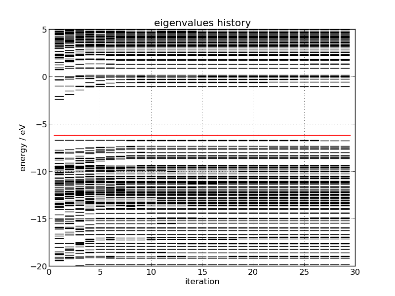

9. ProteinDF計算結果の解析¶
9.1. 一般的に用いられる解析ツール¶
- pdf-top
指定された分子軌道に対し、寄与の大きい原子軌道を表示します。
Usage: pdf-top [Option]
実行すると以下の様な出力が得られます。
$ pdf-top 115
MO level: 115
No. 1 8 C ( 42.525, 37.241, 32.674) p( px) ( 8.18%; 8.18%)
No. 2 8 C ( 42.525, 37.241, 32.674) p( pz) ( 7.77%; 15.95%)
No. 3 20 C ( 43.858, 35.420, 31.228) p( px) ( 7.38%; 23.34%)
No. 4 11 N ( 41.507, 35.639, 33.859) p( px) ( 6.74%; 30.08%)
No. 5 14 C ( 42.553, 33.543, 32.877) p( px) ( 6.69%; 36.77%)
No. 6 20 C ( 43.858, 35.420, 31.228) p( pz) ( 5.54%; 42.31%)
No. 7 14 C ( 42.553, 33.543, 32.877) p( pz) ( 5.20%; 47.51%)
No. 8 11 N ( 41.507, 35.639, 33.859) p( pz) ( 4.71%; 52.23%)
No. 9 9 C ( 41.623, 36.994, 33.649) p( px) ( 4.39%; 56.62%)
No.10 9 C ( 41.623, 36.994, 33.649) p( pz) ( 3.39%; 60.00%)
- pdf-pop
形式電荷を出力します。
Usage: pdf-pop <MO_ID>
- pdf-mo
分子軌道フィールドデータを出力します。
Usage: pdf-mo <MO_ID>
- pdf-esp
静電ポテンシャルのフィールドデータを出力します。
Usage: pdf-esp
- pdf-dens
電子密度フィールドデータを出力します。
Usage: pdf-dens
- pdf-archive
計算結果を集約し、アーカイブを作成します。
Usage: pdf-archive
- pdf-report
計算結果のレポートを作成します。
Usage: pdf-archive
以下のようなエネルギー収束曲線(Fig. 4)や 軌道エネルギーの収束履歴(Fig. 5)が得られます。

Fig. 4: エネルギー収束曲線

{kind=link}
Fig. 5: 軌道エネルギーの収束履歴
9.2. 上級者(デバッグ)用ツール¶
- pdf-mat2txt
指定した行列ファイル(バイナリ形式)を標準出力に出力します。
Usage: pdf-mat2txt
- pdf-vtr2txt
指定したベクトルファイル(バイナリ形式)を標準出力に出力します。
Usage: pdf-vtr2txt
- pdf-mpac2yml
MessagePack形式のファイルをYAMLファイルの変換します。
Usage: mpac2yml.py [options] FILE
Options:
-h, --help show this help message and exit
- pdf-yml2mpac
YAML形式のファイルをMessagePack形式に変換します。
Usage: yml2mpac.py [options] YAML_FILE MPAC_FILE
Options:
-h, --help show this help message and exit
- pdf-diff
2つの計算結果を比較します。
Usage: pdf-diff
- pdf-matinfo
行列情報を出力します。
Usage: pdf-matinfo
- pdf-genmat
行列を作成します。
Usage: pdf-genmat